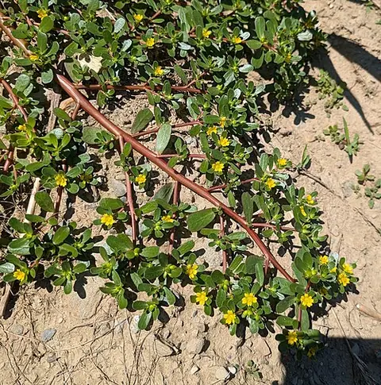

Purslane
Purslane is a wild green you can forage from March to September across India. Low, fleshy, reddish stems and paddle leaves in cracks and plots. Unusually rich in plant omega-3.

When is purslane in season in India?
Purslane is usually in season March to September. Timing shifts with weather, latitude and altitude.
Where does purslane grow in India?
Purslane grows across India. Regions: South India, West coast and Deccan, Thar and dry northwest, Central forests, East, Northeast, Northern plains, Himalaya.
How do you recognise purslane?
Low, fleshy, reddish stems and paddle leaves in cracks and plots. Unusually rich in plant omega-3.
How do you harvest purslane?
Pinch off the young tips and top leaves with your fingers or scissors. Leave the lower leaves and roots so the plant regrows. Pick in the morning, away from roads and drains.
How do you eat purslane?
Raw in salads in small amounts, or in dal and bhaji.
How do you store purslane?
Best fresh. Can be pickled.
What can be confused with purslane?
Asthma weed (spurge) (Euphorbia hirta), rated harmful. Snap a stem. Spurge oozes white milky sap. Purslane's sap is clear and watery. Purslane stems and leaves are thick and fleshy. Spurge is thin and hairy. Spurge has tiny greenish flower balls at the leaf joints. Purslane has small yellow flowers.
What is purslane good for?
Vitamin C, Vitamin A.
What can you cook with purslane?
- Purslane salad: Tender purslane tips with onion, tomato, lime and roasted peanuts.